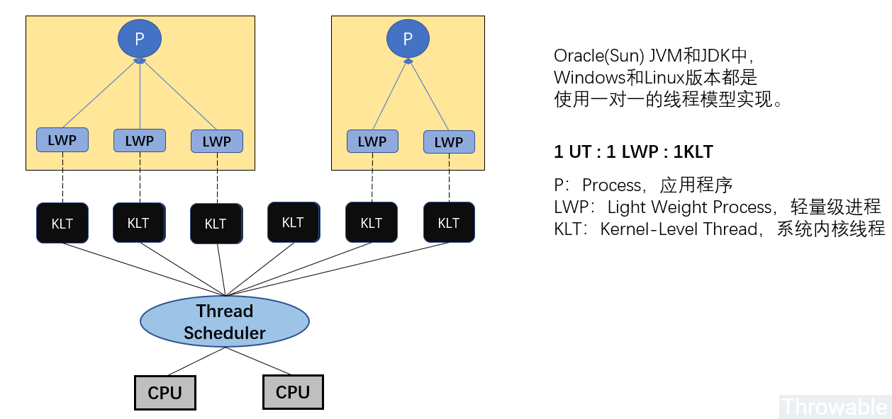
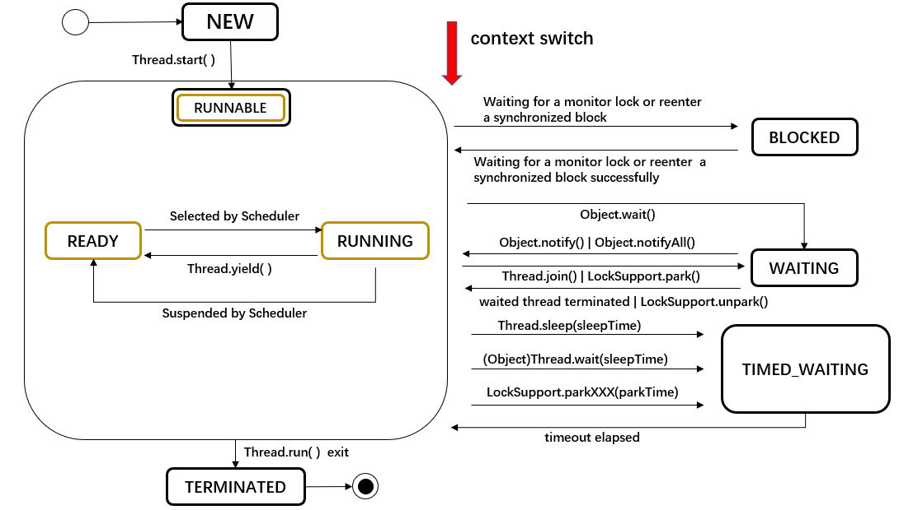
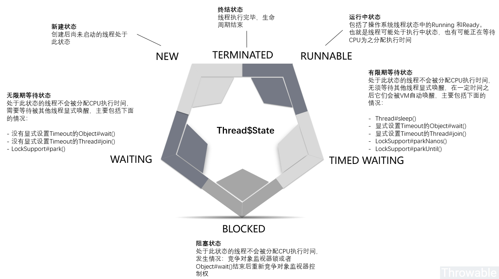

友情支持
如果您觉得这个笔记对您有所帮助，看在D瓜哥码这么多字的辛苦上，请友情支持一下，D瓜哥感激不尽，😜
|
|


有些打赏的朋友希望可以加个好友，欢迎关注D 瓜哥的微信公众号，这样就可以通过公众号的回复直接给我发信息。

公众号的微信号是: jikerizhi。因为众所周知的原因，有时图片加载不出来。 如果图片加载不出来可以直接通过搜索微信号来查找我的公众号。 |
41. Thread
在JDK1.2之后，Java线程模型已经确定了基于操作系统原生线程模型实现。

Java线程最终会映射为系统内核原生线程，所以Java线程调度最终取决于系操作系统，而目前主流的操作系统内核线程调度基本都是使用抢占式线程调度。也就是可以死记硬背一下：Java线程是使用抢占式线程调度方式进行线程调度的。
线程状态在 Thread 类已经通过一个枚举给出了所有可能：
1
2
3
4
5
6
7
8
9
10
11
12
13
14
15
16
17
18
19
20
21
22
23
24
25
26
27
28
29
30
31
32
33
34
35
36
37
38
39
40
41
42
43
44
45
46
47
48
49
50
51
52
53
54
55
56
57
58
59
60
61
62
63
64
65
66
67
68
69
70
71
72
73
74
75
76
77
78
79
80
81
82
83
84
85
86
87
88
89
90
91
92
93
94
95
96
97
98
99
100
101
102
103
public class Thread implements Runnable {
// ……
/**
* A thread state. A thread can be in one of the following states:
* <ul>
* <li>{@link #NEW}<br>
* A thread that has not yet started is in this state.
* </li>
* <li>{@link #RUNNABLE}<br>
* A thread executing in the Java virtual machine is in this state.
* </li>
* <li>{@link #BLOCKED}<br>
* A thread that is blocked waiting for a monitor lock
* is in this state.
* </li>
* <li>{@link #WAITING}<br>
* A thread that is waiting indefinitely for another thread to
* perform a particular action is in this state.
* </li>
* <li>{@link #TIMED_WAITING}<br>
* A thread that is waiting for another thread to perform an action
* for up to a specified waiting time is in this state.
* </li>
* <li>{@link #TERMINATED}<br>
* A thread that has exited is in this state.
* </li>
* </ul>
*
* <p>
* A thread can be in only one state at a given point in time.
* These states are virtual machine states which do not reflect
* any operating system thread states.
*
* @since 1.5
* @see #getState
*/
public enum State {
/**
* Thread state for a thread which has not yet started.
*/
NEW,
/**
* Thread state for a runnable thread. A thread in the runnable
* state is executing in the Java virtual machine but it may
* be waiting for other resources from the operating system
* such as processor.
*/
RUNNABLE,
/**
* Thread state for a thread blocked waiting for a monitor lock.
* A thread in the blocked state is waiting for a monitor lock
* to enter a synchronized block/method or
* reenter a synchronized block/method after calling
* {@link Object#wait() Object.wait}.
*/
BLOCKED,
/**
* Thread state for a waiting thread.
* A thread is in the waiting state due to calling one of the
* following methods:
* <ul>
* <li>{@link Object#wait() Object.wait} with no timeout</li>
* <li>{@link #join() Thread.join} with no timeout</li>
* <li>{@link LockSupport#park() LockSupport.park}</li>
* </ul>
*
* <p>A thread in the waiting state is waiting for another thread to
* perform a particular action.
*
* For example, a thread that has called {@code Object.wait()}
* on an object is waiting for another thread to call
* {@code Object.notify()} or {@code Object.notifyAll()} on
* that object. A thread that has called {@code Thread.join()}
* is waiting for a specified thread to terminate.
*/
WAITING,
/**
* Thread state for a waiting thread with a specified waiting time.
* A thread is in the timed waiting state due to calling one of
* the following methods with a specified positive waiting time:
* <ul>
* <li>{@link #sleep Thread.sleep}</li>
* <li>{@link Object#wait(long) Object.wait} with timeout</li>
* <li>{@link #join(long) Thread.join} with timeout</li>
* <li>{@link LockSupport#parkNanos LockSupport.parkNanos}</li>
* <li>{@link LockSupport#parkUntil LockSupport.parkUntil}</li>
* </ul>
*/
TIMED_WAITING,
/**
* Thread state for a terminated thread.
* The thread has completed execution.
*/
TERMINATED;
}
// ……
}


Java 对象内存占用大小：
-
对象头在32位系统上占用8bytes，64位系统上占用16bytes。开启（-XX:+UseCompressedOops）对象头大小为12bytes（64位机器）。
-
64位机器上，数组对象的对象头占用24个字节，启用压缩之后占用16个字节。之所以比普通对象占用内存多是因为需要额外的空间存储数组的长度。
-
64位机器上reference类型占用8个字节，开启指针压缩后占用4个字节。
-
复合对象，直接计算当前对象占用空间大小，包括当前类及超类的基本类型实例字段大小、引用类型实例字段引用大小、实例基本类型数组总占用空间、实例引用类型数组引用本身占用空间大小; 但是不包括超类继承下来的和当前类声明的实例引用字段的对象本身的大小、实例引用数组引用的对象本身的大小。
-
对齐填充是以每个对象为单位进行的。
HotSpot的对齐方式为8字节对齐： （对象头 + 实例数据 + padding） % 8等于0且0 ⇐ padding < 8。
1
2
3
4
5
6
7
8
9
10
11
12
13
14
15
16
17
18
19
20
21
22
23
24
25
26
27
28
29
30
31
32
33
34
35
36
37
38
39
40
package com.diguage.truman.concurrent;
import org.openjdk.jol.info.ClassLayout;
import org.openjdk.jol.vm.VM;
/**
* @author D瓜哥, https://www.diguage.com/
* @since 2020-04-08 16:10
*/
public class JolTest {
/**
* Java Object Layout
*/
public static void main(String[] args) {
System.out.println(VM.current().details());
System.out.println("--o = 12--------------");
Object o = new Object() {};
System.out.println(ClassLayout.parseInstance(o).toPrintable());
System.out.println("--o2 = 12--------------");
Object o2 = new Object() {
private String name = "";
private long age = 0;
};
System.out.println(ClassLayout.parseInstance(o2).toPrintable());
System.out.println("--\"119\"--------------");
String s = "119";
System.out.println(s.hashCode());
System.out.println(ClassLayout.parseInstance(s).toPrintable());
System.out.println("--119L--------------");
System.out.println(ClassLayout.parseInstance(119L).toPrintable());
System.out.println("--o[] = 16--------------");
System.out.println(ClassLayout.parseInstance(new Object[0]).toPrintable());
System.out.println("--o[1]--------------");
System.out.println(ClassLayout.parseInstance(new Object[]{new Object()}).toPrintable());
}
}
join() 方法的本质是当前线程对象实例调用线程 wait() 方法。
1
2
3
4
5
6
7
8
9
10
11
12
13
14
15
16
17
18
19
20
21
22
23
24
25
26
27
28
29
30
31
32
33
34
35
36
37
38
39
40
41
42
43
44
45
46
47
48
49
50
51
52
53
54
55
56
57
58
59
60
61
62
63
64
65
66
67
68
69
70
71
72
73
74
75
76
77
78
79
80
81
82
83
84
85
86
87
88
89
90
91
92
93
94
95
96
97
98
99
100
101
102
103
104
105
106
107
108
109
110
111
112
113
114
115
116
117
118
119
120
121
122
123
124
125
126
127
128
129
130
131
132
133
134
135
136
137
138
139
140
141
142
143
144
145
146
147
148
149
150
151
152
153
154
155
156
157
158
159
160
161
162
163
164
165
166
167
168
169
170
171
172
173
174
175
176
177
178
179
180
181
182
183
184
185
186
187
188
189
190
191
192
193
194
195
196
197
198
199
200
201
202
203
204
205
206
207
208
209
210
211
212
213
214
215
216
217
218
219
220
221
222
223
224
225
226
227
228
229
230
231
232
233
234
235
236
237
238
239
240
241
242
243
244
245
246
247
248
249
250
251
252
253
254
255
256
257
258
259
260
261
262
263
264
265
266
267
268
269
270
271
272
273
274
275
276
277
278
279
280
281
282
283
284
285
286
287
288
289
290
291
292
293
294
295
296
297
298
299
300
301
302
303
304
305
306
307
308
309
310
311
312
313
314
315
316
317
318
319
320
321
322
323
324
325
326
327
328
329
330
331
332
333
334
335
336
337
338
339
340
341
342
343
344
345
346
347
348
349
350
351
352
353
354
355
356
357
358
359
360
361
362
363
364
365
366
367
368
369
370
371
372
373
374
375
376
377
378
379
380
381
382
383
384
385
386
387
388
389
390
391
392
393
394
395
396
397
398
399
400
401
402
403
404
405
406
407
408
409
410
411
412
413
414
415
416
417
418
419
420
421
422
423
package com.diguage.truman.concurrent;
import org.junit.jupiter.api.Test;
import java.time.LocalDateTime;
import java.util.ArrayList;
import java.util.HashMap;
import java.util.List;
import java.util.Map;
import java.util.concurrent.DelayQueue;
import java.util.concurrent.Delayed;
import java.util.concurrent.TimeUnit;
import java.util.concurrent.locks.LockSupport;
/**
* @author D瓜哥, https://www.diguage.com/
* @since 2020-03-12 18:07
*/
public class ThreadTest {
@Test
public void testState() throws InterruptedException {
Thread thread = new Thread(() -> {
System.out.println("StartTime: " + LocalDateTime.now());
int i = 0;
try {
Thread.sleep(10 * 1000);
while (true) {
i++;
if (i > Integer.MAX_VALUE >> 1) {
break;
}
}
} catch (InterruptedException e) {
System.out.println("testState: is interrupted at "
+ LocalDateTime.now());
e.printStackTrace();
}
System.out.println(" EndTime: " + LocalDateTime.now());
});
// NEW
System.out.println(thread.getState());
thread.start();
// RUNNABLE
System.out.println(thread.getState());
Thread.sleep(1000);
// TIMED_WAITING
System.out.println(thread.getState());
Thread.sleep(9200);
// RUNNABLE ??
System.out.println(thread.getState());
Thread.sleep(10 * 1000);
// TERMINATED
System.out.println(thread.getState());
}
@Test
public void testBlockState() throws InterruptedException {
Object lock = new Object();
Thread t1 = new Thread(() -> {
synchronized (lock) {
try {
Thread.sleep(Integer.MAX_VALUE);
} catch (InterruptedException e) {
e.printStackTrace();
}
}
});
Thread t2 = new Thread(() -> {
synchronized (lock) {
System.out.println("thread2 got monitor lock...");
}
});
t1.start();
Thread.sleep(50);
t2.start();
Thread.sleep(50);
System.out.println(t2.getState());
}
@Test
public void testInterrupt() throws InterruptedException {
class InterruptTask implements Runnable {
@Override
public void run() {
Thread.interrupted();
Thread thread = Thread.currentThread();
while (true) {
if (thread.isInterrupted()) {
System.out.println("InterruptTask was interrupted at "
+ LocalDateTime.now());
}
// try {
// Thread.sleep(5 * 1000);
// } catch (InterruptedException e) {
// e.printStackTrace();
// }
}
}
}
Thread thread = new Thread(new InterruptTask());
thread.start();
Thread.sleep(20 * 1000);
thread.interrupt();
}
// TODO
@Test
public void testInterruptStatus1() throws InterruptedException {
class InterruptTask implements Runnable {
@Override
public void run() {
long i = 0;
while (true) {
i++;
}
}
}
Thread thread = new Thread(new InterruptTask());
thread.start();
Thread.sleep(1000);
thread.interrupt();
System.out.println("thread.isInterrupted() = " + thread.isInterrupted());
System.out.println("thread.isInterrupted() = " + thread.isInterrupted());
LockSupport.parkNanos(TimeUnit.SECONDS.toNanos(2));
}
// TODO
@Test
public void testInterruptStatus2() throws InterruptedException {
class IntDelay implements Delayed {
private int num;
private long deadline;
public IntDelay(int num) {
this.num = num;
deadline = System.currentTimeMillis() + TimeUnit.SECONDS.toMillis(num);
}
@Override
public long getDelay(TimeUnit unit) {
return deadline - System.currentTimeMillis();
}
@Override
public int compareTo(Delayed o) {
IntDelay param = (IntDelay) o;
return Integer.compare(this.num, param.num);
}
}
class InterruptTask implements Runnable {
@Override
public void run() {
Thread current = Thread.currentThread();
DelayQueue<IntDelay> queue = new DelayQueue<>();
queue.add(new IntDelay(1));
try {
System.out.println("Wait " + LocalDateTime.now());
queue.take();
System.out.println("Taken " + LocalDateTime.now());
} catch (InterruptedException e) {
e.printStackTrace();
}
System.out.println("current.isInterrupted() = " + current.isInterrupted());
System.out.println("current.isInterrupted() = " + current.isInterrupted());
}
}
Thread thread = new Thread(new InterruptTask());
thread.start();
Thread.sleep(500);
thread.interrupt();
System.out.println("thread.isInterrupted() = " + thread.isInterrupted());
LockSupport.parkNanos(TimeUnit.SECONDS.toNanos(2));
}
@Test
public void testWaitLock() throws InterruptedException {
// 测试 wait 是否释放锁
// 根据运行结果来看，thread1 和 thread2 是交叉执行的，
// 则：线程在 wait 时，是释放了锁的，
// 再次获取锁后，会接着上次执行点继续执行。
//
// 这里还有一点需要注意：wait 需要在锁对象上执行，否则会报错。
Object lock = new Object();
Thread t1 = new Thread(() -> {
synchronized (lock) {
try {
System.out.println("thread1 start to wait...");
lock.wait(1000);
System.out.println("thread1 weak up...");
} catch (InterruptedException e) {
e.printStackTrace();
}
}
});
Thread t2 = new Thread(() -> {
synchronized (lock) {
System.out.println("thread2 got monitor lock...");
}
});
t1.start();
Thread.sleep(50);
t2.start();
Thread.sleep(2000);
}
@Test
public void testSleepLock() throws InterruptedException {
// 测试 sleep 是否释放锁
// 根据输出来看，thread1 执行完后再次执行的 thread2
// 则：线程在 sleep 时，不释放锁。
Object lock = new Object();
Thread t1 = new Thread(() -> {
synchronized (lock) {
try {
System.out.println("thread1 start to wait...");
Thread.sleep(2000);
System.out.println("thread1 weak up...");
} catch (InterruptedException e) {
e.printStackTrace();
}
}
});
Thread t2 = new Thread(() -> {
synchronized (lock) {
System.out.println("thread2 got monitor lock...");
}
});
t1.start();
Thread.sleep(50);
t2.start();
Thread.sleep(3000);
}
@Test
public void testJoin() throws InterruptedException {
JoinMain.AddThread thread = new JoinMain.AddThread();
thread.start();
// 执行这句话，则下面的输出会等 thread 执行完成后，i值等于100000；
// 如果注释掉，则瞬间向下执行，i值很小。
thread.join();
System.out.println(JoinMain.i);
}
static class JoinMain {
public volatile static int i = 0;
static class AddThread extends Thread {
@Override
public void run() {
for (i = 0; i < 100000; i++) {
}
}
}
}
@Test
public void testYield() throws InterruptedException {
Map<Integer, Integer> map = new HashMap<>();
Integer key = 1;
Integer key2 = 2;
Thread thread = new Thread(() -> {
while (true) {
Thread.yield();
Integer num = map.getOrDefault(key, 1);
map.put(key, ++num);
}
});
Thread thread2 = new Thread(() -> {
while (true) {
Integer num = map.getOrDefault(key2, 1);
map.put(key2, ++num);
}
});
thread.start();
thread2.start();
Thread.sleep(1000);
// 如果 Thread.yield() 没有让出 CPU，则两个值相差不多；否则相差很大。
System.out.println(map.toString().replace(",", "\n"));
System.out.println(thread.getState());
}
@Test
public void testChildThread() {
// TODO 如何掩饰父子线程？如何在父子线程之间传递数据？
List<Thread> threads = new ArrayList<>();
Thread thread1 = new Thread(() -> {
Thread thread = Thread.currentThread();
ThreadLocal<Integer> threadLocal = ThreadLocal.withInitial(() -> 119);
Thread child = new Thread(() -> {
});
System.out.printf("id=%d, parentId=%d %n", thread.getId(), 123);
try {
Thread.sleep(10000);
} catch (InterruptedException e) {
e.printStackTrace();
}
});
threads.add(thread1);
thread1.start();
}
@Test
public void testInterruptNoAction() {
// 虽然给线程发出了中断信号，但程序中并没有响应中断信号的逻辑，所以程序不会有任何反应。
Thread thread = new Thread(() -> {
while (true) {
Thread.yield();
}
});
thread.start();
thread.interrupt();
LockSupport.park();
}
@Test
public void testInterruptAction() {
Thread thread = new Thread(() -> {
while (true) {
Thread.yield();
// 响应中断
if (Thread.currentThread().isInterrupted()) {
System.out.println("Java技术栈线程被中断，程序退出。");
return;
}
}
});
thread.start();
thread.interrupt();
LockSupport.parkNanos(TimeUnit.MINUTES.toNanos(1));
}
@Test
public void testInterruptFailure() throws InterruptedException {
Thread thread = new Thread(() -> {
while (true) {
// 响应中断
if (Thread.currentThread().isInterrupted()) {
System.out.println("Java技术栈线程被中断，程序退出。");
return;
}
try {
// sleep() 方法被中断后会清除中断标记，所以循环会继续运行。。
Thread.sleep(1000);
} catch (InterruptedException e) {
System.out.println("Java技术栈线程休眠被中断，程序退出。");
}
System.out.println(Thread.currentThread().getState() + " 线程苏醒，继续执行……");
}
});
thread.start();
Thread.sleep(100); // 注意加上这句话！否则线程还没启动就被终端了
thread.interrupt();
LockSupport.parkNanos(TimeUnit.MINUTES.toNanos(1));
System.out.println(thread.getState());
}
@Test
public void testInterruptSleep() throws InterruptedException {
Thread thread = new Thread(() -> {
while (true) {
// 响应中断
if (Thread.currentThread().isInterrupted()) {
System.out.println("Java技术栈线程被中断，程序退出。");
return;
}
try {
// sleep() 方法被中断后会清除中断标记，所以循环会继续运行。。
Thread.sleep(1000);
} catch (InterruptedException e) {
System.out.println("Java技术栈 线程 休眠被中断，程序退出。");
Thread.currentThread().interrupt();
}
System.out.println(Thread.currentThread().getState() + " 线程苏醒，继续执行……");
}
});
thread.start();
Thread.sleep(100); // 注意加上这句话！否则线程还没启动就被终端了
thread.interrupt();
LockSupport.parkNanos(TimeUnit.MINUTES.toNanos(1));
System.out.println(thread.getState());
}
@Test
public void testSynchronized() throws InterruptedException {
class Account {
int money = 100;
synchronized void increase() {
System.out.println("start to increase");
money -= 10;
double var = 0;
for (int i = 0; i < 10000000; i++) {
var = Math.PI * Math.E * i;
if (i % 2000000 == 0) {
throw new RuntimeException("fire");
}
}
System.out.println("finish increasing." + var);
}
synchronized void decrease() {
System.out.println("start to decrease");
money += 20;
System.out.println("finish decreasing.");
}
}
Account account = new Account();
new Thread(account::increase).start();
Thread.sleep(1);
new Thread(account::decrease).start();
LockSupport.parkNanos(TimeUnit.SECONDS.toNanos(30));
System.out.println(account.money);
}
}
线程休眠苏醒后，中断信号就会被清除！所以，如果要响应这种中断，还需要再异常捕获代码段再次中断才行！
线程上下文切换(Context Switch)，都保存了哪些信息？怎么保存的？
-
Windows 系统中，https://docs.microsoft.com/zh-cn/sysinternals/downloads/process-explorer[Process Explorer] 可以查看上下文切换信息。
-
阿里巴巴推出的 Alibaba Arthas 也是一个诊断利器。